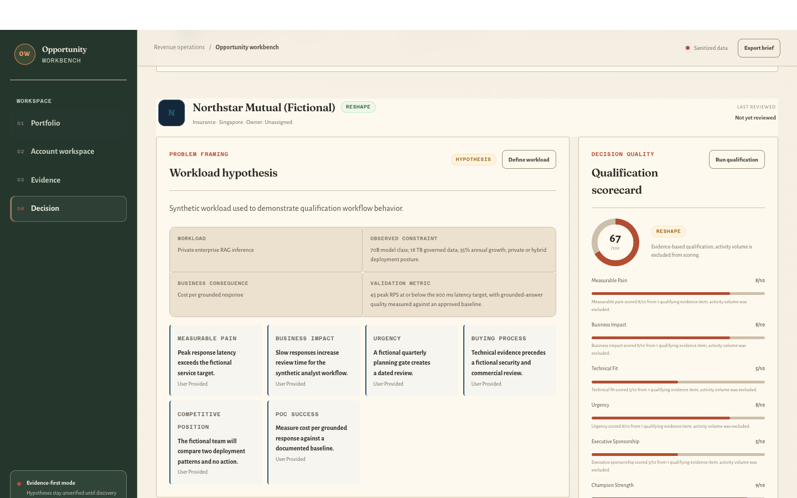

Evidence before precision
Unknowns remain visible instead of becoming confident-looking estimates.
Fictional enterprise scenario · Reviewable method · No customer data
Follow one private-RAG opportunity through discovery, first-pass sizing, architecture framing, financial review, and a conditional executive recommendation.
Unknowns remain visible instead of becoming confident-looking estimates.
Early sizing exposes sensitivities and bottlenecks; it does not impersonate a benchmark.
Architecture, security, benchmark, pricing, and finance reviews remain human decisions.
Interactive decision path
Use the stage controls or left and right arrow keys to move through the opportunity.

Executive handoff
The use case is specific enough to justify a controlled PoC, but final infrastructure and commercial decisions remain gated by representative workload data, benchmark results, security review, operating-model ownership, and current pricing.
What this walkthrough proves
Separate sourced facts, assumptions, missing evidence, stakeholders, and next actions.
Reason across model fit, throughput, latency, memory, storage, network, power, reliability, and operations.
Present a hypothesis with alternatives, risks, validation requirements, and approval boundaries.
Normalize operating states, preserve assumption lineage, stress the case, and distinguish modeled value from realized savings.